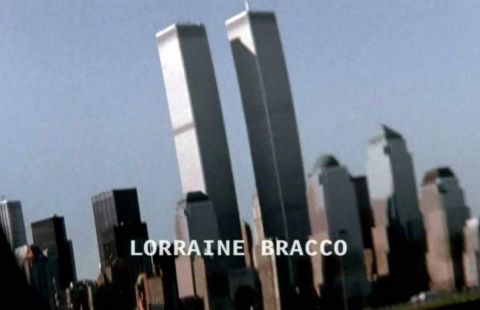
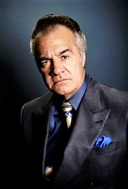
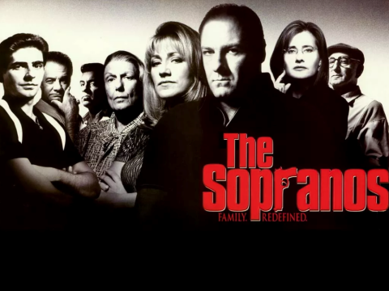
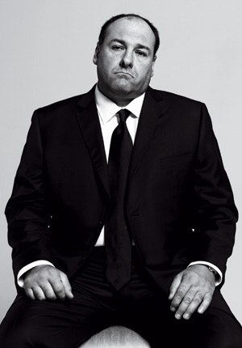

12 cosas que quizás no sabías
- Consejo de sabios
James Gandolfini reconoció que mantenía contacto con algunos mafiosos en la vida real para recibir consejo sobre cómo interpretar a Tony Soprano y darle así mayor autenticidad a la serie.
- La imagen eliminada
La imagen de las Torres Gemelas, que aparecía en el opening de las tres primeras temporadas, fue eliminada tras los atentados del 11-S.
 - Con una condición
Tony Sirico, que interpreta a Paulie Gualtieri, solo accedió a participar en 'Los Soprano' si su personaje no fuera un soplón. Sirico, que tuvo un papel sin acreditar en 'El Padrino: parte II', pasó una temporada en prisión por robo y fue arrestado en un total de 28 ocasiones.
 - Italianos de pura cepa
La mayor parte de los actores del reparto principal de 'Los Soprano' son de ascendencia italiana, salvo Jamie-Lynn Sigler, Robert Iler, David Proval, Nancy Marchand, y Jerry Adler.
- Un título confuso
Jamie-Lynn Sigler no tenía ni idea de qué iba la serie cuando la convocaron a la audición para interpretar a Meadow Soprano. De hecho, creía que la serie trataba sobre el mundo de la ópera. No era la única: HBO estaba muy preocupada de que el público pensara que la serie trataba sobre música, por lo que incluyeron un arma en su logotipo. También pensaron en otros títulos, como 'Made in New Jersey' ('Fabricado en Nueva Jersey').
 - A rajatabla
No había improvisación en el set de rodaje. Todos los guiones se seguían y rodaban a rajatabla, y cualquier cambio posible se discutía en primer lugar con David Chase.
- Controversias salariales
Como tantas otras series, a la hora de renegociar los salarios con la renovación de los contratos surgen numerosas disputas con la productoras. Para atajar el asunto, en una de estas disputas que ocurrieron en la cuarta temporada James Gandolfini les dio a sus compañeros 33.333 dólares de su propio bolsillo.
- Una triste premonición
En la cuarta temporada, Christopher le dice a Tony que se morirá de un ataque al corazón a los cincuenta años debido al sobrepeso. James Gandolfini falleció de un ataque al corazón con tan solo 51 años.
 - Tasa de mortalidad
En la serie fallecen un total de 92 personajes.
- La pelicula
Originalmente, David Chase tenía la idea de un jefe mafioso que va a terapia para resolver los asuntos con su madre, y la había pensado como una película. Luego de discutir el proyecto con su representante, terminó optando por desarrollar la idea y convertirla en una serie de televisión. Aún así, luego de rodar el piloto de la serie, en 1997, HBO dejó el proyecto un poco de lado por algún tiempo, por lo que su creador revivió la idea de la película, propuso a la cadena filmar 45 minutos más y lanzarla como un largometraje. Finalmente, HBO ordenó 12 episodios más para completar la primera temporada de Los Soprano y dar inicio así a un fenómeno histórico e imperdible de la televisión.
- Distintas melodías
Antes de elegir el tema Woke up this morning del grupo musical Alabama 3 como canción de la intro de la serie, David Chase deseaba abrir cada episodio con un número musical diferente. Los ejecutivos de la HBO le convencerían de que lo mejor era una canción fija con la cual los espectadores pudieran identificar la serie. Como suponemos que David Chase es un hombre vengativo, a cambio, el creador de la serie hacía finalizar cada episodio precisamente, con una canción diferente.
- 'Fuck' es la palabra que más se repite en la serie
En la serie de HBO se pronuncia más de 3.000 veces, logrando su récord en la segunda temporada con 715 fucks. Increíble, pero cierto. ¡Cuéntalas!